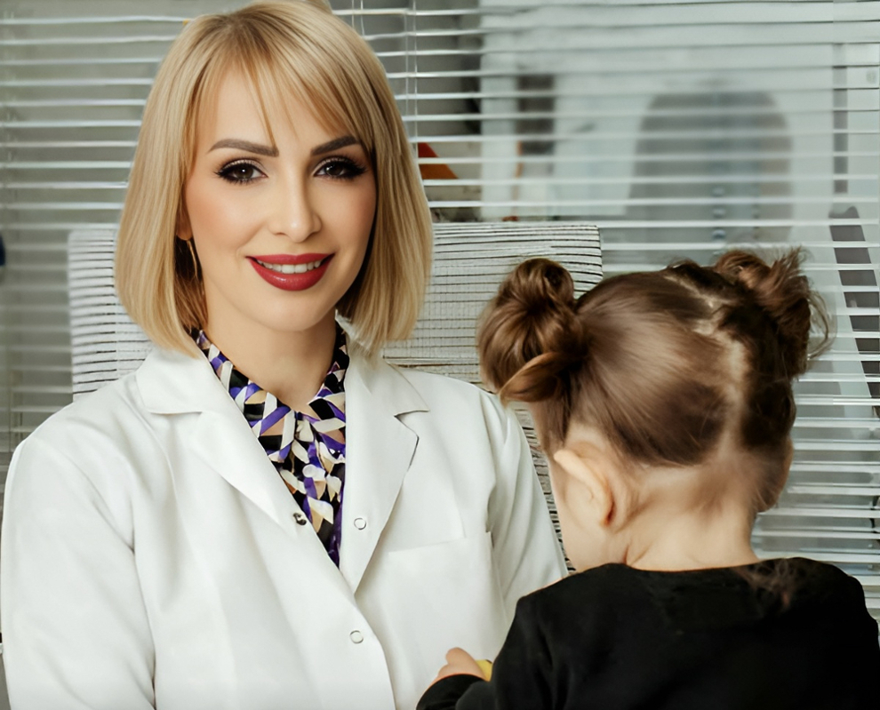
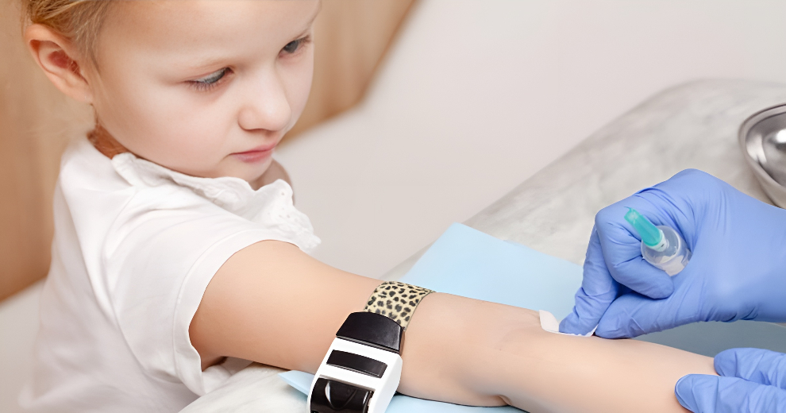
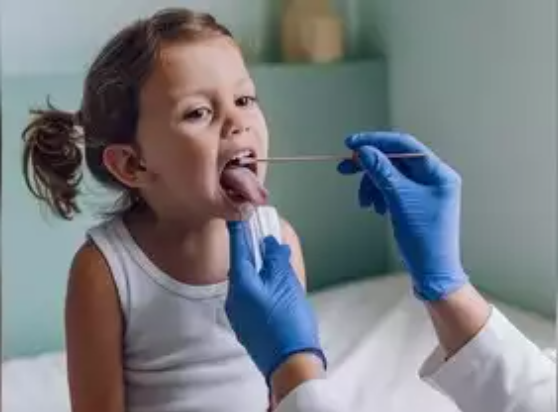

Analizat laboratorike tek fëmijët që pas lindjes, janë shumë të rëndësishme për përcaktimin e shëndetit të tyre, kapjen e hershme të problematikave dhe përcaktimin e trajtimit sipas problemit të identifikuar. Ato janë një procedurë e thjeshtë, por shpeshherë përjetohet me stres jo vetëm nga fëmija, por edhe nga prindërit. Fëmija për prindin është një ”lule mos më prek” dhe ankthi që përjetojnë gjatë marrjes së analizës është një moment mjaft delikat. Personeli shëndetësor duhet të jetë i specializuar për marrjen e gjakut tek fëmijët dhe gjithashtu duhet të kujdeset për gjendjen emocionale të prindërve dhe fëmijës në momentin që fillon procedura. Fatmirësisht vërejmë një rritje të sensibilizimit të prindërve në kohët e fundit për të bërë testet laboratorike tek fëmijët, gjë që lehtëson mjaft edhe punën e mjekëve pediatër për të vënë diagnoza dhe mjekime të sigurta në varësi të rezultatit të analizave.
RËNDËSIA E KRYERJES SË ANALIZAVE TEK FËMIJËT
Duke qenë se fëmijët rriten me një ritëm të shpejtë, është shumë e rëndësishme që të sigurohemi që sistemet e tyre si veshkat apo mëlçia po funksionojnë normalisht. Gjithashtu analizat e gjakut na orientojnë nëse trupi po merr në mënyrë të saktë nutrientët dhe vitaminat e nevojshme. Dihet që ka një rrezik të lartë për aneminë nga mungesa e hekurit dhe për rakitizmin nga mungesa e vitaminës D te fëmijët e vegjël, prandaj matja e tyre në gjak na ndihmon në parandalimin e pasojave që vijnë nga mungesa e tyre. Gjithashtu dihet që fëmijët kanë një imunitet të ulët dhe janë më vulnerabël ndaj infeksioneve, prandaj bërja e analizave të inflamacionit kur ata janë të sëmurë ndihmon në përcaktimin e një infeksioni të lehtë apo të një septicemie të mundshme. Analizat që duhen kryer tek fëmijët e vegjël varen nga mosha, historia mjekësore, simptomat dhe nevojat specifike të tyre. Megjithatë, ekzistojnë disa analiza bazë dhe specifike që rekomandohen për monitorimin e shëndetit të fëmijëve.
MOSHA E FILLIMIT TË TESTEVE LABORATORIKE TE FËMIJËT
Protokollet e ekzaminimeve laboratorike ndahen në screening dhe analiza të planifikuara sipas situatës shëndetësore të fëmijës. Në screening përfshihen ato analiza që fëmija duhet të bëjë kur nuk është i sëmurë. Mosha e kryerjes së analizave fillon që tek i porsalinduri në spital me anë të testit screening që detekton sëmundje metabolike dhe gjenetike si fenilketonuria, hypotiroidizmi ose talasemia. Ato merren përmes një pike gjaku në një letër thithëse speciale dhe shpimi bëhet në thembrën e bebit. Procedura është pa dhimbje dhe minimale. Analizat screening vazhdojnë më pas në moshën 9–12 muaj. Ato përfshijnë një sërë analizash që lidhen me aneminë, vitaminat dhe sistemet e tjera në organizëm. Ndërsa analizat e çastit bëhen kur fëmija është i sëmurë dhe përcaktohen nga mjeku pediatër sipas problematikës shëndetësore të fëmijës.

CILAT JANË ANALIZAT MË TË SHPESHTA TEK FËMIJËT?
Analizat përfshijnë kryesisht ato të urinës, fytit, feçes dhe gjakut. Urina: Analiza e urinës është analizë rutinë e cila kryhet për të parë infeksionin, kristalet, proteinat etj. Ajo mund të jetë një analizë e thjeshtë mikroskopike ose urokulturë. Procedura duhet të jetë korrekte, dhe prindi ndihmon në kryerjen e saktë duke i treguar fëmijës se si duhet të urinojë. Është shumë e rëndësishme që pjesa e parë e urinës të mos mblidhet dhe para kryerjes së analizës të bëhet higjena e zonës intime. Për të gjitha këto ndihmon personeli i laboratorit i cili shpjegon me detaje se si duhet të merret mostra. Fyti: Analiza e fytit rekomandohet për testin e streptokokut A tek fëmijët. Procedura kërkon që fëmija të hapi gojën dhe me një tampon të merret materiali në tonsila. Është shumë e rëndësishme që procedura të bëhet butë, jo me forcë, dhe lehtë sepse mund të shkaktojë dhimbje dhe discomfort deri në të vjella te fëmija.
Analiza e feçeve është një kontroll për parazitë intestinalë, gjak okult ose infeksione gastrointestinale. Analiza bazë të gjakut për fëmijët e vegjël 9 muaj deri në 2 vjeç
Gjaku: Meqë fëmijët kanë vena të holla dhe presioni i gjakut tek ta është i ulët, mund të këshillohen të pijnë ujë të thjeshtë atë mëngjes, për të mbushur shtratin e gjakut dhe për të ndihmuar në gjetjen e shpejtë të venës. Pirja e ujit të thjeshtë nuk ndikon në parametrat biokimike-klinike dhe hormonale të gjakut, prandaj është e lejueshme. Vendi i shpimit mund të jetë vena, gishti ose thembra në varësi të moshës dhe llojit të analizës.
Mjetet e përdorura janë age të vogla për fëmijë. Fëmija duhet të inkurajohet ta shohë procedurën si ndodh. Kjo ndihmon që fëmija të mos ketë ankth dhe të mos fantazojë në mënyrë jo reale pasi të largohet nga laboratori.
1.Hemograma ose analiza e plotë e gjakut periferik kontrollon nivelet e hemoglobinës, hematokritit dhe qelizave të bardha dhe kuqe te gjakut dhe trombocitet për të zbuluar anemi, infeksione ose çrregullime të tjera që lidhen me sëmundje më specifike.
2.Analiza e sideremisë dhe ferritinës vlerëson rezervat e hekurit dhe diagnostikon aneminë nga mungesa e hekurit.
3.Analiza e glukozës gjak ndihmon për të zbuluar çrregullime të metabolizmit të glukozës dhe diabetit të trashëguar.
4.Vitamina D veçanerisht për fëmijët me rritje të dobët ose ekspozim të kufizuar në diell.
5.Profili lipidik (kolesteroli dhe trigliceridet) në raste të veçanta, sidomos nëse ka një histori familjare të sëmundjeve kardiovaskulare.
6.Funksionet renale dhe hepatike duhet të kontrollohen për të parë sistemet filtruese dhe metabolizuese te fëmija.

Analiza specifike të gjakut për nevoja të veçanta tek fëmijët e vegjël rekomandohen edhe si kontroll rutinë, por edhe nëse fëmija dyshohet për një sëmundje të caktuar ose ka një histori familjare. Ato janë:
1.Hormonet e tiroides (TSH, FT4) nëse ka dyshime për çrregullime të tiroides, si hipotiroidizmi.
2.Alergjia, IgE totale dhe specifike, dhe analizat molekulare shërbejnë për të identifikuar alergjitë ushqimore ose mjedisore, ato nga kafshët dhe insektet etj.
3.Analiza e intolerancës ushqimore (laktoza/gluteni) nëse ka simptoma të intolerancës, si fryrje barku ose diarre.
4.Testi i plumbit dhe metaleve të rënda nëse ka ekspozim të mundshëm ndaj ndotësve të mjedisit në ajër ose në ujin e pijshëm dhe manifeston çrregullime të sjelljes dhe sistemit nervor. 5.Elektrolitet dhe funksioni renal/hepatic në raste ku ka dehidratim me të vjella, diarre të zgjatur ose sëmundje kronike të intolerancës. Pas moshës dy vjeç, fëmijës i duhen bërë kontrollet pediatrike rutinë të kombinuara me check-up sipas ecurisë së fëmijës.
ÇFARË NDODH ME FËMIJËN GJATË MARRJES SË ANALIZËS?
Shpesh mjekët pediatër sforcohen duke u shpjeguar prindërve protokollin e analizave pasi kanë vizituar fëmijën e sëmurë. Kjo ndodh për shkak të formimit apo eksperiencave personale që vetë prindi ka kaluar në fëmijëri. Prandaj është e rëndësishme që gjatë vizitave rutinë, pediatri të informojë prindin dhe ta edukojë atë për rëndësinë e testeve laboratorike që i duhen fëmijës si kur është sëmurë, ashtu edhe kur vjen për një kontroll rutinë. Mjeku i laboratorit vjen në ndihmë të pediatrit për të shpjeguar analizat që do të kryhen dhe kur rezultatet dalin, ai ndihmon në shpjegimin e tyre. Përgatitja e fëmijës për analiza gjaku përfshin jo vetëm përgatitjen e fëmijës por edhe atë të prindërve. Prandaj është shumë e rëndësishme që në fillim t’i shpjegohet prindit si do të kryhet analiza, çfarë mjetesh do përdoren dhe sa zgjat ajo.
Në momentin që prindi e kupton procedurën, ai kthehet në një bashkëpunëtor shumë të mirë dhe fëmija qetësohet. Gjithashtu, mund t’i tregohen video dhe foto të procedurës me fëmijë të tjerë për ta parë dhe kuptuar më së miri për çfarë bëhet fjalë.
Prindi duhet t’i shpjegojë fëmijës çfarë do të ndodhë dhe ta sigurojë ate qe nuk do ndjejë dhimbje dhe se gjithçka do mbarojë shumë shpejt dhe se ai do të jetë aty pranë gjatë gjithë kohës me të.
Nëse fëmija ka ankth, duhet të bëhen ushtrime për frymëmarrjen derisa fëmija të qetësohet.
Nëse procedura e lejon, dhe fëmija kërkon kontakt fizik me prindin, atëherë prindi mund ta përqafojë gjatë gjithë kohës duke e inkurajuar me fjalë të ëmbla dhe të buta.
Mund të aplikohen edhe “shpërblimet” pasi mbaron procedura, ku fëmija merr një dhuratë për trimërinë që tregoi gjatë marrjes së gjakut. Pra të gjitha këto teknika, ndihmojnë në kryerjen e procedurës me sukses dhe mbi gjitha, është e rëndësishme që fëmija ta kujtojë si një moment normal dhe jo traumatik, ku të gjithë ishin aty pranë tij deri në momentin e fundit.
Këshilla praktike
Konsultohuni me pediatrin: Mjeku pediatër rekomandon analizat sipas moshës dhe gjendjes së fëmijës në momentin e vizitës. Më pas, në laborator mund të këshilloheni për përgatitjen e fëmijës para se të bëjë analizën. Monitoroni rritjen: Analizat shpesh plotësojnë një vlerësim të përgjithshëm të zhvillimit dhe rritjes së fëmijës. Profilaksia: Për fëmijët që janë në zona të rrezikshme për anemi, parazitë apo mangësi të vitaminave, bëhen kontrolle më të shpeshta. Nëse keni ndonjë shqetësim specifik për fëmijën tuaj, mund të kërkoni këshillime dhe konsulta me mjekët pediatër dhe mjekët e laboratorit në klinikën Vera-Virhov çdo ditë.
© Nuk lejohet riprodhimi i shkrimeve pa vendosur autorësinë e revistës "Psikologjia" dhe pa cituar burimin.